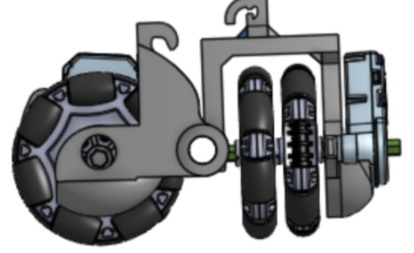
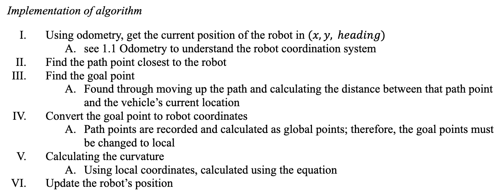
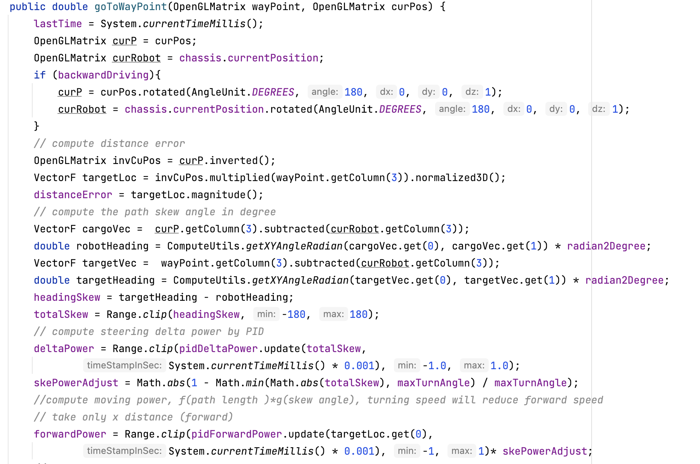

The problem with relying on mecanum wheel motor encoders is its inaccuracy and single-direction tracking. Free-wheel odometry encoders can track front-back and left-right motion.
The robot is recorded in three dimensions, consisting of six elements. Three values define the position and three rotation angles define the rotation about the X, Y, and Z axis. Note that the order of the rotations matters to the orientation. These three positions are recorded in a 4x4 vector matrix. It is important to keep track of which frame of reference is being used. The global coordinate frame is relative to the robot’s surroundings. We start robotics experiments with the robot at position (0, 0) and facing in the direction of the axis. The local coordinate frame is relative to the robot. We use the local coordinates when measuring the movement or setting the velocity of the wheels.
Pure pursuit is an algorithm that calculates the curvature the robot will move from its current position to its next location. Using “look ahead distance,” which is where the algorithm got its name from (pure pursuit: pursuing the moving point ahead of it), the algorithm works by choosing a point ahead of the robot on the path. This algorithm mathematically determines the curvature with the use of a “goal point,” which is one lookahead distance away from the current position of the robot. From the point of the robot and the goal point is the arc that joins them. The lookahead distance is the chord length of the arc.
The Stanley algorithm calculates the steering angle command, in degrees, that adjusts the current pose of a vehicle to match a reference pose, given the vehicle's current velocity and direction. While Pure Pursuit uses the rear axle as its reference point, the Stanley algorithm uses the front axle as its reference point, and looks at both the heading error and cross-track error. In this method, the cross-track error is defined as the distance between the closest point on the path with the vehicle’s front axle. Beyond considering the heading error, the Stanley algorithm also corrects the cross-track error. Suppose the heading error is large and the cross-track error (skew angle) is small. In that case, that means 𝜓 is large, so the steering angle 𝛿 will be large and steer in the opposite direction to correct the heading error, which can bring the vehicle orientation the same as the trajectory. We use Stanley moving long distances and use Pure Pursuit for moving short distances. This is because Pure Pursuit is good at end state control, while Stanley is good at cruise control. In addition, we also have a system where if Stanley fails, the state machine falls back onto Pure Pursuit in order to ensure the least error will happen during autonomous.
Here is a snippet of our Stanley implementation.
